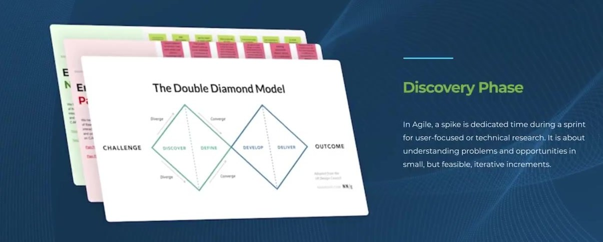

Discovery
Four user problems we wrote on the wall, and refused to ship without solving.
Discovery interviews, system audits and CJM workshops surfaced the same patterns repeatedly. We narrowed the program to four problems and tied every later design decision to one of them.
User Problems
- Old design with outdated UX patterns
- User can't schedule alerts by sentiment
- User doesn't know which mentions are negative
- User can't share events or reports
Solutions Shipped
- Design system based on Material UI
- Smart alerts: spike, gap, and sentiment triggers
- Sentiment analysis surfaced on every event
- Sharing across clips, events and reports

Primary persona "Larry", a Public Relations Analyst at a small agency. Every later decision was checked against his day.

We framed discovery with the Double Diamond, so every problem had a clear path from challenge to outcome. Interviews, a system audit and CJM workshops fed the same four problems.